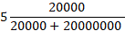

Team Charlie: Water Testing module
Introduction to Information Technology Assignment 3: Our IT Project
Overview
The water testing unit will offer an effective way to monitor water parameters for consumers. This will be especially enabling for those who wish to go off the grid or who live in rural areas on tank or dam water and are on a budget.
The targeted testing will give a good up to the minute indication of color and turbidity, temperature, electrical conductivity, and PH. This will be coupled with an intuitive user interface for easily understandable values.
The water testing unit will indicate when further testing should be undertaken to ensure your water source is safe for consumption.
Table of contents
- Overview
- Topic
- Detailed Description
- Housing and fittings
- Electronics housing
- Computing, electronics, and connectors
- Conductivity Sensor
- Turbidity and Color Sensor
- Temperature Sensor
- PH sensor
- User Interface
- Aims
- Roles
- Scope and Limits
- Tools and Technologies
- Scope and Limits
- Tools and Technologies
- Testing
- Timeframe
- Risks
- Group communication
- References
Topic
This initiative proposes to develop a simple, low-cost potable water (Potable Water - Water Education Foundation, 2022) quality monitoring device, targeted at the consumer market. These devices are intended to be used in situations where water supplies are drawn from sources that do not have quality monitoring built in, as is the case for most rural and remote households.
With simplicity and cost effectiveness as core design requirements, this device will utilize readily available components wherever possible, including the sensing elements. The primary user interface will be kept as simplistic as possible, and the entire device is designed to allow installation and maintenance by the end user. By keeping the price point low, it is envisaged this product will become a standard issue for any household relying on an un-managed water supply.
Motiviation
In Australia, 16% (AIHW, 2018) of households draw their water from sources other than a mains supply, and approximately 2 billion people globally (Drinking-water, 2022) do not have access to a managed water source. The ability to directly monitor basic water quality parameters has the potential to reduce the social and economic costs associated with water borne illnesses.
While the core functionality will be fully self-contained, support for Internet of Things (IoT) and smart home integration will be built in. The current trend for connected smart devices in the home will allow these devices to contribute to data collection on basic water quality across a region, which has many potential benefits. Catchment management authorities could utilize this data to build models of the water quality landscape and use this information to influence management practices or warn consumers of increased risk profile for specific water sources.
This project is relevant for several members of this team, both in the device functionality and the skills required to develop. Several members live or work in environments where water quality is an active concern, and this type of monitoring would be advantageous. The project also covers many disciplines members are passionate about, from Computer Aided Design (CAD) modeling the physical device, hardware integration, low level software development, User Interface (UI) development and interactive simulation environments.
Broadly, this project will produce a device that solves a definable problem, while developing transferable skills in a range of Information Technology (IT) disciplines.
Landscape
Municipal supply infrastructure incorporates extensive water quality testing; however, this equipment is expensive, complex, and inaccessible to household consumers. This device is imagined to be available through retail outlets, at a price point comparable to other smart home devices.
Similar devices for monitoring large bodies of water (lakes, bays, dams, etc.) (LG Sonic, 2022) are available commercially, and this concept has been proposed for large scale monitoring in municipal settings (Radhika, Srinivasan, Ramya and Sharmila, 2021). At the time of writing, no comparable commercial products were identified, however research discovered many instructional guides for building similar devices at home (Shastry, 2022).
Detailed Description
Housing and fittings
Materials for the sensor housing were selected based on availability, service life, and cost.
- Domestic grade PVC (polyvinyl chloride) pipe & Fittings
- This material is readily available throughout most of the world. The material has characteristics suitable for this application
- Low cost
- Easy to manufacture
- Does not degrade when exposed to UV light or other harsh atmospheric and environmental conditions
- Thermally stable
- Dimensionally stable
- Available in many thickness and pressure ratings
- Complex geometries can be achieved with simple manufacturing techniques (during development)
- Well suited to large scale production using injection molding.
- 316SS bolts and plugs
The sealing technique, especially at the camera and LED lens locations will require further testing during physical prototyping to develop a simple, economical and effective solution.
The main sensor body as currently designed is constructed of ~100mm (4”) PVC pipe, with commercially available threaded couplings glued into place. This fabrication technique is expected to be adequate for testing purposes, however the final product will be constructed as a single homogeneous component. Any designs intended for external testing or commercial sale will include pressure ratings in compliance with the applicable regulations.
Electronics housing
 figure 2
figure 2
A standard format PVC or ABS project enclosure will be employed to house the electronics, including the AD-DC power supply and Arduino (Figure 2). For prototyping a 150L x 200W x 60D enclosure was selected allow sufficient space for additional components to be added during development. The final configuration will be sized to the minimum possible dimensions.
Computing, electronics, and connectors
 figure 3
figure 3
The use of a full-size Arduino Uno will also be re-considered in future iterations. A custom PCB (Figure 3) integrating the power supply, microcontroller, the sensor interface board (see below), and the PH meter controller will reduce the physical footprint of the electronics, as well as reducing the total number of components.
The inclusion of a visual display in the prototype design enables onboard monitoring and control during testing and development. For the final design, this would be replaced with a series of LED indicators, reducing the cost, and simplifying the construction and assembly of the electronics enclosure. Detailed monitoring and control of the device will be achieved through a network interface, embedded in a mobile application.
External connectors will be of waterproof, detachable design for ease of installation and maintenance.
Lemo type connectors have been used in the prototype modeling for sensor housing connections, however screw type (Figure 4) fittings will be used for the final design, as there is no need for frequent disconnections which would justify the additional cost associated with the Lemo style. In the prototype design an IEC C14 (Interpower IEC 60320 C13 and C14, 2022) mains power connection has been used, this will also be reviewed to ensure safety and regulatory compliance obligations are met in the final design.
figure 4The PCB included in the prototype design (Figure 3) contains the minimum external circuitry required to generate a signal which can be ingested by the Arduino platform.
Camera
PowerData passthrough
Temperature
PowerPull-up resistor on the data line
PH sensor
PowerData passthrough from dedicated controller board
Conductivity
PowerVoltage divider circuit
Conductivity Sensor
 figure 5
figure 5
The voltage divider circuit (Figure 5) consists of two resistive elements, one known (the varistor – R1 in figure 2) and one unknown (the water being sampled – R2 in Figure 5).
By comparing the output voltage from this circuit, the unknown resistance can be calculated and an electrical conductivity value in Ohm’s extrapolated.
The equation for this is as follows,
 |
|
Applying the above equation to the electrical resistance ranges results in a Vout value that can be read by the Arduino as an analogue input.
| Water type | Ω (Ohm per cm) | Applied formula | Voltage divider output (volts) |
|---|---|---|---|
| Pure water | 20000000 |  | Effectively zero |
| Distilled water | 500000 |  |
0.192 |
| Rainwater | 20000 |  |
2.5 |
| Tap water | 1000-5000 |  |
4 - 4.762 |
| River water (Brackish) | 200 | 4.95 | |
| Seawater (Costal) | 30 |  |
4.993 |
| Seawater (Open sea) | 20-25 | 4.995 |
The Arduino Uno includes a 10bit Analogue to Digital Converter (ADC) present in the ATmega328P microcontroller (ATmega328P Datasheet, 2022) which provides a resolution of 1024 for analogue inputs. Applied to the 5v range of the electrical conductivity voltage divider circuit, this equates to 1024 divisions of 0.0048v.
For initial testing, this configuration was deemed to be acceptable, providing sufficient level of granularity for the application. If during testing the resolution is found to be insufficient, additional signal processing may be implemented. Options to improve the accuracy for this sensor include
Using an external ADC of higher resolution
Increasing the voltage range, increasing the size of each division.
Adding noise filtering circuitry to dampen signal drift from factors other than the sensor.
Adding multiple sensors, with signal averaging applied to achieve a more stable reading.
A varistor has been included in the voltage divider circuit to enable course calibration. Fixed value resistors are subject to manufacturing tolerances which would offset the reading of the voltage divider circuit. While this may need to be calibrated for in the ADC values, the varistor allows for fine tuning of the R2 resistance value.
Future design iterations may move the ADC close to the sensing elements to reduce noise and other interference associated with analogue signals transmitted over long cables. This change would also enable a more accurate scale to be used while retaining the 0-5v range. As the safe drinking range is within 2-4.75 volts, the range outside this is wasted. Re-configuring the circuit to spread the full 5v range across resistance values between 30kΩ and 1kΩ (extremely pure rainwater to water at the upper limits of drinkable hardness) will increase the accuracy of the sensor without detracting from the functionality.
Turbidity and Color Sensor
The camera feed will serve two functions, turbidity, and color. The turbidity will be determined by the amount of light blocked by the water passing through the device body. To establish a baseline, the device will be filled with static distilled water, and the brightness value of each pixel in the resulting image captured and an average value obtained. In operation, any decrease in this averaged brightness value will correlate with increased opacity of the medium within the device which correlates to turbidity. The scale for acceptable levels of turbidity will be determined based on user testing. This method has one potential major flaw, being the presence of gas voids in the medium introduced through cavitation, pump design or other sources, would impact the captured image. The device has been sized to significantly exceed the normal pipe diameter for domestic supply, thus reducing the velocity and hopefully limiting cavitation, and the protruding sensing elements have also been located far away from the camera location to assist in limiting the turbulence they may create. Testing with of the physical prototype in a range of supply conditions will be required to determine if this flaw negatively affects the intended function.
The color will be assessed in two ways. Primarily by averaging the RGB values across the entire image and comparing them to an arbitrary scale. Secondly by presenting the image to the user/ consumer through the UI. This will allow subjective assessment by a larger sample group than the development team alone. Integrating a user feedback mechanism into the UI will allow for incremental improvement of the scale used for the primary assessment, resulting in ongoing improvements of the acceptable range calculations.
The light source for the camera is provided by a 5mm (about 0.2 in) LED mounted opposite the camera. This will be powered from the 12v supply, with current limiting resistors placed at the LED location, so cable length will not influence the output.
The camera is both the most subjective and most valuable sensor included in the device. The ranges and acceptable limits for visible elements are difficult to quantify, however it is felt this will increase the value for consumers.
Temperature Sensor
The DS18B20 temperature sensor was selected for its physical package, onboard ADC, and data transfer protocol. This sensor is available in a waterproof 6mm (about 0.24 in) x 35mm (about 1.38 in) cylindrical package (ds18b20-digital-temp-sensor-arduino, 2022) ideal for these applications. The onboard ADC prevents analogue signal degradation due to cable length and induced noise, simplifying the circuitry design.
The single wire digital data protocol (Guide to 1-Wire Communication, 2022) provides a simple interface between the Arduino microcontroller and the sensor. Utilizing the publicly published ‘OneWire’ (Stoffregen, 2022) and ‘Dallas Temperature’ (Burton, 2022) libraries, the temperature value can be read with one line of code. The interface also enables multiple devices on a single bus wire, which would allow for additional sensors to be added to the device for redundancy, or to sample atmospheric temperatures as well.
User Interface
figure 6As noted in previous sections, the inclusion of an interactive user interface on the device will be reviewed in later iterations. For prototyping a Waveshare touch screen (7inch Capacitive Touch Screen, 2022) (Figure 5) has been included in the model. This screen provides a 7-inch display area with integrated touch control and was selected for its larger size and because the touch interface removes the requirement for other input devices. This screen is compatible with the Arduino platform when combined with an appropriate shield (self-contained interface board designed to fit the Arduino platform and physical layout), however the practicalities including required the number of IO pins used, power consumption, computational cost and ease of use have not been considered. It is entirely possible a multi-segment LCD display coupled with a pair of tactile buttons would suffice for testing purposes.
In future iterations it is envisaged that there will be no direct user interface mounted on the device excepting a single RGB LED. All detailed information, configuration and diagnostics will be completed through a web application. To implement this, the device would be extended to include a Wi-Fi module, with the device functioning as a stand-alone web server hosting the interface or configured to communicate with a cloud server acting as an interface. Further investigation into current best practice for IoT devices and suitability for this application is required.
Aims
The goal for this project is to produce a working prototype capable of sampling core water quality parameters (temperature, PH, color, turbidity, and total dissolved solids) and displaying a simplified overview derived from those data points. This will require:
1. Create digital protype
This phase will produce an interactive digital analogue of the final device, allowing the development team to trial ideas and test theories. It will also provide the first tangible element of the development process, enabling the development team to demonstrate the concept to potential investors in an interactive manner.User experience testing:
A full mock-up of the final user interface will be produced, enabling iterative development without requiring physical changes.This interactive environment will enable end users to test the interface and provide feedback.
Functionality testing sandbox:
A representation of a water source will be produced, with interactive controls for modifying the parameters being sampled by the device included.
The logic to convert raw sensor inputs and convert to high level values will be developed and tested.
System outputs based on generated values and defined water quality ranges will be developed and tested.
2. Modeling device and circuitry
This phase will produce detailed design elements for the physical prototype, achieved through extensive use of CAD tools. A full Bill of Materials (BOM) will be generated, enabling comprehensive unit pricing estimates to be produced.CAD model components:
All components will be modeled as 3d objects, enabling informed design choices with regards to arrangement and construction of the housing body. Material, physical characteristics and ergonomic choices can be trialed with minimal associated cost.CAD model circuits :
All electronics circuitries will be modeled in a CAD environment with iterative design operating in parallel with the physical modeling to produce compact, effective Printed Circuit Board (PCB) designs, well suited to the intended application.
3. Construction of physical devices:
Once all development pathways in the digital space have been exhausted, construction of physical prototypes will commence. This phase will uncover many challenges not identified through the initial CAD modeling process, with iterative design falling back to the digital phases to resolve issues.
Fabricating housing for sensors :
Utilizing the BOM produced from the physical CAD model, a prototype will be produced. Fit and function of all components will be tested.Building circuitry for sensor/ Arduino integration:
Initial PCB designs will be produced, and the circuitry assembled. Full functionality testing will be conducted.Providing the necessary feedback to the CAD design process :
This process will provide invaluable information the design team, enabling effective iterative design progression.4. Programming of the Arduino :
The programmatic logic developed during the digital prototyping phase will be ported for compatibility with the Arduino microcontroller.
Sensor data ingestion:
This phase will introduce challenges that are not present in the ideal conditions used for digital prototyping. Sensor calibration, environmental factors, digital noise, and other unexpected influences will need to be identified and managed.
GUI (Graphical User Interface) :
Modification of the UI to work within the constraints of the real-world device
Iterative improvement will be applied based on testing
IoT pipeline:
Data output formats and interfaces will be selected based on findings of initial testing.
5. Publish IoT web interface :
Web page
Data repository
This phase was not attempted during the time available for this project. This requires a well-defined data output from the device, and research into current best practices for IoT device interfaces.
Plans and Progress
Phase 1: Digital prototype
To enable visualization of the functionality and assist in demonstrating the operational concepts of the design, a digital prototype was created using JavaScript and the p5.js library for visualization.
This prototype includes interactive elements for each of the sampled parameters. By manipulating the sliders, different water source configurations can be visualized, with the traffic light water quality indication system responses seen.
While not directly transferable to the C++ language required for the Arduino sketch the physical device will require, the programming created to produce the visualization requires the scales and ranges to be defined for each parameter and its acceptability limits.
The digital prototype was developed with the p5.js web editor (P5.js, 2022), and the current progress can be seen below. Further development is required to add functionality, improve the visual impact, and add features expected withing the final web interface.
Phase 2: Modeling device and circuitry.
An initial CAD model was created, so assist in visualizing the scale and configuration of the device. This first model was considered by the group and the broad design style agreed on. Iterative development further refined the layout, with consideration on the placement of sensor mounting locations the primary concern.
The current version of the model can be seen and interacted with below. Significant further development is required, including designing a mounting solution for the electronics housing and camera module. It is also possible to undertake flow simulations within the CAD software to determine if sensor placement is likely to produce cavitation or other effects which may impact the image captured by the camera.
Phase 3: Prototyping.
As noted in the aims section of this document, minimal work was completed in this phase at this point in the development process. A 1:1 scale 3d printed model (Figure 6) was produced from the CAD model to assist with visualizing the scale of the device. This model is not intended to be used in any functional tests, due to the three-piece construction not being suitable for pressure containment.
Length 380mm, outer diameter 88mm, wall thickness 4.8mm.

Progress on the CAD model is shown below.
By selecting the 'Model Browser' (bottom row left hand side icon of tool bar), items visibility can be toggled, enabling a view of the internal components.
Itemised parts list
| Item Number | Part Name | Part Description | Unit Price | Qty required |
|---|---|---|---|---|
| 1 | Arduino Uno | Development board and microcontroller | $27.60 | 1 |
| 2 | Lemo Connector | Detachable cable connectors | $51.30 | 4 |
| 3 | Power supply | Power supply for the water sampler | $10 | 1 |
| 4 | Electrical enclosure | Provides a secure enclosure for the water sampler electronics to operate | $16 | 1 |
| 5 | M16 Bolt | Bolt to hold the water sampler together | $2 | 1 |
| 6 | 3/4" Plug | Plugs to be used for createing a water tight area | $2 | 1 |
| 7 | M10 Bolt | Bolt to hold the water sampler together | $2 | 2 |
| 8 | 240v Power connector | This allows the device to be connected a wall outlet | $9.95 | 1 |
| 9 | Touchscreen | Allows for a user to access to a user Interface | $52 | 1 |
| 10 | Camera Module | Allows the device to detect turbidity | $17 | 1 |
| 11 | PVC Pipe | 200mm pipe | $16.49 | 1 |
| 12 | PH Sensor | Allows the device to detect PH | $45 | 1 |
| 13 | Temperature Sensor | Allows the device to detect temperature | $4 | 1 |
| 14 | Custom PBC pipe | Provides structure for the device | $5 | 1 |
| 15 | Holman 80mm x 3" Press PVC Faucet Socket | PVC Faucet Socket | $8.35 | 1 |
| 16 | Panel mount connectors | Allows data to be transferable to the device | $17 | 1 |
Custom PCB schematic
 figure 7
figure 7Roles
Project management & Technical writing
Thomas Jeremiah
Cameron Aitken
These members exhibited proficiency in group management, oversight, and professional writing throughout assignment 2, leveraging experience from their professional lives. The bulk of the technical detail was generated by Tom during the prototype development phase, with editorial review completed by Cameron.
Digital prototype
Josh Douglas (Lead)
Thomas Jeremiah
Constituting the main artifact of the project during the initial phase, it was decided one member would be dedicated exclusively to development, with assistance when needed. As there was no previous experience with JavaScript in the group, Joshua was nominated for the lead role. Josh produced a preliminary concept, with minor final amendments made by Tom.
Presentation
Jack Northway (Lead)
Kevin (Rogelio) Espinoza
The production of the Audio/Visual component was outside the current skill set of the group. Jack Northway expressed an interest in this area and took on the lead role with assistance from Rogelio.
Web Page duplication
Jack Bell (Lead)
Josh Douglas
Thomas Jeremiah
The extension of the website created during A2 including HTML (Hypertext Markup Language) file duplication and modification, and webpage navigation was owned by Jack Bell. During the development of the JavaScript interactive model, Josh manipulated the repository files for testing. Embedding of the JavaScript and CAD models was completed by Tom.
Scope and Limits
Because of the significant limitations on time, skills, funding, and geographical proximity imposed on this project, careful consideration of the deliverables was undertaken early on. It was agreed that production of a physical prototype would not be possible under the circumstances, and efforts should be focused on developing and improving the digital prototype and CAD modeling phases, effective completion of which will display the intended functionality in a manner which conveys the design ethos without requiring in-depth technical understanding.
The primary area of focus will be the digital protype, as this will produce the greatest returns on effort. Initially, a broad outline will be produced that demonstrates the concept at a crude level. Each component can then be iteratively improved, adding to the final product.
The secondary area of focus will be CAD modeling. Work on this phase has significantly diminishing returns, where the general shape can be created very quickly, but refinement and detail take exponentially more time with limited outward value added. While this detail is necessary to progress to the next design phase, as this project is unlikely to continue beyond the scope defined here, efforts are best expended in areas which produce the greatest visible outcomes.
Finally, the accompanying literature should explain and justify the process and challenges faced through the design process to date.
Tools and Technologies
P5.js (P5.js, 2022)
The digital prototype is an interactive visual embedded in this HTML web page, created with the p5.js library, a free and open-source tool for creating interactive visual elements.
This library was suggested by a member who had previous experience with the Processing language, which is the forebear of the p5.js. The lead developer, Joshua Douglas, had no experience with either JavaScript or visual design in software prior to taking on this challenge.
Fusion 360 (Autodesk, 2022)
All CAD development was undertaken in Fusion 360, accessed via educational licenses. This software provides a comprehensive suite of tools, including CAD modeling of engineering and electronics components and collaboration tools which were used by team members to access the model.
Members of the design team had varied experience with CAD software prior to beginning this project, from professional (Thomas Jeremiah), through hobbyist (Jack Northway), to no experience at all (Jack Bell).
GitHub (GitHub, 2022)
>Along with the digital prototype, all digital artefacts of the project were hosted in a GitHub repository. This provides a collaboration environment, allowing the entire team to contribute. The webpage design is a modified version of the HTML 5Up template ‘Future Imperfect’ (Future Imperfect by HTML5 UP, 2022)Visual Studio Code (Visual Studio Code, 2022)
The html page code modification was completed using this platform. It provides a text based code editor with multiple language support, as well as a range of tool and plug-ins to streamline the development process.
Arduino IDE (Arduino IDE, 2022)
Not used to date in this project, the Arduino IDE is an open source and freely available programing environment for the development of software, known as sketches, for the Arduino family of development boards. The Arduino uses a modified version of C++, and the IDE provides all the necessary tools to customize an Arduino, including:
- Text editor with interactive coding tools - Library management functions - Arduino board USB interface management - Terminal output interface
Adobe Premier Pro (Adobe Premier Pro, 2022)
Accessed through an education discounted subscription, this software will be used for all postproduction video editing, primarily the product presentation component. This professional grade software provides a suite of tools to edit and produce Audio/ Visual content.
Testing
Two phases of testing have been identified,
Internal function testing
During each phase of development, the functionality will be tested by members of the team focused on other areas. The intention is to produce constructive feedback from sources less familiar with the specific detail, while still conversant with the broader objectives.
End user testing
On completion of any phase which produces a tangible output, testing using resources outside the group will be undertaken. Initially, testers will be sourced from acquaintances of the development team who have an interest in either the concept or intended functionality, e.g., family members who draw their water supply from an unmonitored source. For further testing, external groups which have an interest in the project goals will be approached. These may include rural community groups, disaster aid organizations and local councils where mains water supply does not cover a substantial proportion of the community.
Timeframe
Timeframe:
With additional time and resources to further develop the project, the next 2 and a half months would be expected to produce two prototypes. While these would not be expected to approach a commercially viable product, many of the fundamental design decisions will have solidified, and iterative improvements applied.
Risks
The primary risk identified with this project is the limited number of water quality parameters which are being sampled. These parameters were selected based on both accessibility of sensors, and their impact on water quality, however they do not cover pathogens which are the primary source of water borne illness. It was determined during the planning stage to be impractical to effectively sample bacteria, viruses, and harmful algae in an online monitoring device.
pWhile the parameters that are tested will indicate conditions where pathogens are more likely to be present, it is entirely possible for harmful levels to be present, despite the monitoring device indicating the water source is within a safe range. This has the potential to cause harm, as consumers unaware of the limitations may neglect precautions they would otherwise have taken.
This risk would need to be mitigated through effective marketing and education on the limitations of the device.
The secondary risk is to the electronics posted by the wet environment this device will be placed within. Persistent damp and submersion will test the effectiveness of the waterproofing incorporated in the design. Vibration from pumps, water hammer and other mechanical damage mechanisms including poor user handling and installation presents a significant risk of premature failure of the device.
The design process will consider this risk and attempt to mitigate, however extended testing will be required to ensure a reliable product.
The sealing technique, especially at the camera and LED lens locations will require further testing during physical prototyping to develop a simple, economical, and effective solution.
Group Communication
Group processes and communications:
Team Charlie utilizes sprints to achieve targets set in weekly or biweekly Teams meetings. Meetings target each phase of production starting with the initial concept. Each sprint consists of a single objective per member.
Team Charlie also uses a signal group chat for fast effective and secure communication, with each team member providing updates on their availability and progress. The project management members also frequently reached out to request additional information and provide guidance.
Team Profile
Personal info
Group processes-
In assessment 2, our group the quality of our teamwork was mixed. We handled quality control, the completion of our own tasks for the assessment, and our last-minute rush to double and triple-check our work exceptionally. We also worked well at communicating exactly what was going on at any time with messaging apps like Signal and regular meetings on Microsoft teams that were attended by everybody. A large portion of our struggles came down to team members struggling with meeting deadlines in advance to make more time to fix up other aspects of the assessment leading to a much more packed last-minute rush to finish off the last few details. A large portion of the group members also struggled with the written work portion of the assessment and needed more help with getting their reports in line.
For assessment 3 our group has decided to handle the dividing of tasks to cater to group members' strengths. The group decided to split the assessment tasks into 2 and created 3 smaller groups to handle tasks within the assessment that are better handled by those group members. The first of these smaller groups handled the websites HTML, javascript, and CSS side of the assessment, the second handled the report side of the assessment and the third handled the tacking of assessment 5 with the presentation and storyboard. As these tasks were completed group members were then moved over to help with the other tasks to be completed in the assessment.
Images placeholder
This is text beside the image -------------------------------------------------------------------------------------------------------------------------------------------------------------------------------------------------------------------------------------------------------------------------------------------------------------------------------------------------------------------------------------------------------------------------------------------------------------------------------------------------------------------------------------------------------------------------------------------------------------------------------------------------------------------------------------------------------------------------------------------------------------------------------------------------------------------------------------------------------------------------------------------------------------------------------------------------------------------------------------------------------------------------------------------------------------------------------------------------------------------------------------------------------------------------------------------------------------------------------------------------------------------------------------------------------------------------------------------------------------------------------------------------------------------------------------------------------------------------------------------------------------------------------------------------------------------------------------------------------------------------------------
 v3.png)
This is text beside the image ---------------------------------------------------------------------------------------------------------------------------------------------------------------------------------------------------------------------------------------------------------------------------------------------------------------------------------------------------------------------------------------------------------------------------------------------------------------------------------------------------------------------------------------------------------------------------------------------------------------------------------------------------------------------------------------------------------------------------------------------------------------------------------------------------------------------------------------------------------------------------------------------------------------------------------------------------------------------------------------------------------------------------------------------------------------------------------------------------------------------------------------------------------------------------------------------------------------------------------------------------------------------------------------------------------------------------------------------------------------------------------------------------------------------------------------------------------------------------------------------------------------------------------------------------------------------------------------------
References
References2022. ATmega328P Datasheet. [eBook] Atmel. Available at:
2022. P5.js. Processing foundation.
2022. Adobe Premier Pro. Adobe.
AIHW, 2018. Australia's health 2018, Water quality - Australian Institute of Health and Welfare. [online] Australian Institute of Health and Welfare. Available at:
au.element14.com. 2022. ds18b20-digital-temp-sensor-arduino. [online] Available at:
Autodesk, 2022. Fusion 360. Autodesk.
2022. Arduino IDE. Arduino.
Burton, M., 2022. GitHub - milesburton/Arduino-Temperature-Control-Library: Arduino plug and go library for the Maxim (previously Dallas) DS18B20 (and similar) temperature ICs. [online] GitHub. Available at:
2022. GitHub. GitHub.
HTML5 UP. 2022. Future Imperfect by HTML5 UP. [online] Available at:
Interpower. 2022. Interpower IEC 60320 C13 and C14. [online] Available at:
LG Sonic. 2022. Monitoring Buoy | Monitor Algae and Water Quality - LG Sonic. [online] Available at:
Maximintegrated.com. 2022. Guide to 1-Wire Communication. [online] Available at:
Radhika, V., Srinivasan, K., Ramya, R. and Sharmila, B., 2021. Immersive Technology in Smart Cities. IoT-Based Water Quality and Quantity Monitoring System for Domestic Usage. [online] EAI/Springer. Available at:
Shastry, A., 2022. IoT -based water quality sensor. [online] Arduino Project Hub. Available at:
Stoffregen, P., 2022. OneWire Arduino Library, connecting 1-wire devices (DS18S20, etc) to Teensy. [online] Pjrc.com. Available at:
2022. Visual Studio Code. Microsoft.
Water Education Foundation. 2022. Potable Water - Water Education Foundation. [online] Available at:
Waveshare.com. 2022. 7inch Capacitive Touch Screen. [online] Available at:
Who.int. 2022. Drinking-water. [online] Available at: